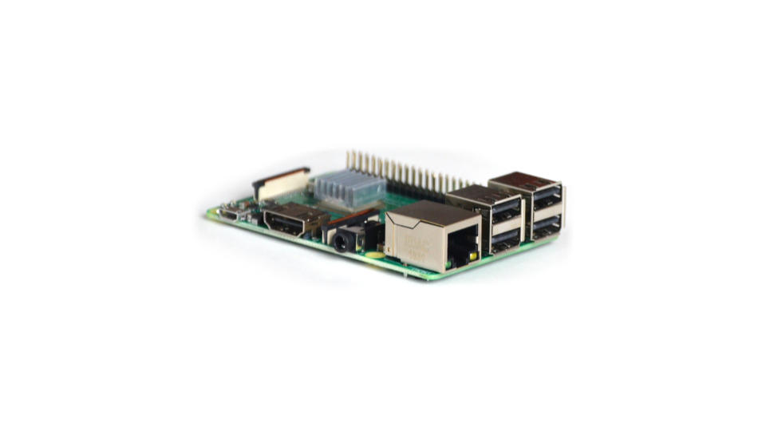

Create context-aware physical spaces with a Raspberry Pi
Our step-by-step guide to create #CAPSpaces with a Pi using open source technologies.
The TL;DR (Too Long; Didn't Read)
Learn how we at reelyActive create CAPSpaces with the ubiquitous Pi.
The Raspberry Pi will facilitate the free exchange of information about who/what is where/how in the space.
- What are CAPSpaces?
- Context-aware physical spaces are the natural interface of human-centric technologies: making sense of our reality and what matters to us.
- Why use a Pi?
- A Pi is ubiquitous and cost-effective, and can collect ambient data & provide audiovisual feedback via its Bluetooth & HDMI interfaces, respectively.
- Does this apply only to the Pi?
- Most of the process applies equally well to similar platforms, especially those running Debian/Ubuntu Linux.
Preparing the hardware Step 1 of 4
Flash the SD card with Raspberry Pi OS Lite and connect the display.
- Do I need a display?
- No, but it is an effective interface for occupants to discover and interact with your space, and allows you to configure the Pi without SSH.
- Can I use my current Raspberry Pi OS?
- We strongly recommend flashing a new SD card from scratch, following the tutorials below, to ensure that the many prerequisites are met.
Do not connect power to the Pi until instructed to do so!
Connect the display Part 1
Assuming you have a display available for your context-aware physical space, go ahead and connect that to the Pi, via HDMI cable, as a gratifying first step.
Connect a keyboard (OPTIONAL) Part 2
In Part 3 below, you'll be asked to SSH into the Pi to execute commands remotely from your computer. If you're unfamiliar with SSH—don't worry, we have a Super Special Hack for you—simply connect a USB keyboard to the Pi, so that you can execute commands directly via the keyboard & display instead!
Prepare the SD Card Part 3
Follow our step-by-step tutorial to prepare the SD card for the Pi, including network settings and prerequisite software packages.
-

-
Prepare a Raspberry Pi from scratch
Our step-by-step tutorial on how we install and configure Raspberry Pi OS Lite on a Pi.
If you connected a display & keyboard, you can execute commands directly on the Pi without having to SSH in.
Preparing the software Step 2 of 4
Install Pareto Anywhere and enable kiosk mode to drive the display.
- What's Pareto Anywhere?
- Pareto Anywhere is the open source middleware that enables context-aware physical spaces.
- What's kiosk mode?
- Ambient displays operate in kiosk mode, where the content is fullscreen and the pointer is hidden.
Install Pareto Anywhere Part 1
Follow our step-by-step tutorial to install Pareto Anywhere on the Pi, configuring the onboard radio as the source of ambient data as specified in Step 2, Part 2.
-

-
Run Pareto Anywhere on a Raspberry Pi
Our step-by-step guide to install and run Pareto Anywhere on a Raspberry Pi to make any physical space context-aware.
Upon completion of this tutorial, anyone using any device on the same local network as the Pi should be able to access the Pareto Anywhere landing page, web apps and APIs at http://pareto.local, or via the Pi's IP address.
Freedom of access ensures that CAPSpaces remain inclusive as per our UNI philosophy.
Enable kiosk mode Part 2
Follow our step-by-step tutorial to drive the display with a web application from the Pareto Anywhere Apps.
-

-
Configure a Raspberry Pi as a kiosk display
Our step-by-step guide to configure a Raspberry Pi as a kiosk display that runs automatically on boot.
Upon completion of this tutorial, the Pi should, every time it boots, automatically display a web app (we recommend Hyperlocal Context Explorer), for occupants of the space to discover and observe.
Configuring the space Step 3 of 4
Associate metadata with the space and its resident ambient devices, including the Pi itself.
- Why associate metadata?
- Human-entered metadata adds context: not everything in/about a physical space is machine-readable!
- What kind of metadata?
- Metadata includes digital twins (via URL), tags, directories and positions, all of which contribute to hyperlocal context.
Twin the Pi Part 1
Complete the following four steps to create and associate a digital twin with the Pi.
Browse to the Hyperlocal Context Explorer web app (ex: pareto.local/apps/hlc-explorer/) and observe a graph with a single hub node.
The hub node represents the Pi. The other nodes represent the ambient devices it has discovered.
Click on the hub node which represents the Pi.
An offcanvas window should appear, including a Story tab, in which you can create a digital twin.
In the Story tab, choose whether to represent the Pi as a Product (i.e. itself) or the Place where it is installed.
Enter a short, meaningful Name.
Choose a representative Image.
Click Store & Associate to create and host the digital twin on the Pi itself.
Close the offcanvas and refresh the explorer view.
Observe the Pi again as the hub node, this time with the name and image of the digital twin.
Associate additional metadata with the Pi Part 2
After completing Part 1 above, again click on the Pi's node, and this time select the Associations tab from the offcanvas.
Notice that the url field already points to the digital twin of the Pi, created in Part 1.
Optionally enter a hierarchical (colon-separated) directory and click Save.
Optionally enter a position using (comma-separated) latitude, longitude, [elevation] and click Save.
Twin and associate resident ambient devices Part 3
If appropriate, repeat Part 1 and/or 2 above for the nodes representing ambient devices discovered by the Pi in the context-aware physical space. Resident ambient devices may include:
- fixed environmental sensors (ex: temperature, humidity)
- asset tags (ex: furniture, equipment)
- personnel badges
- products and appliances
Extending functionality Step 4 of 4
Connect infrastructure and an analytics suite.
- Why add infrastructure?
- To extend across additional spaces and/or to improve location granularity within the current space.
- Why add analytics?
- Pareto Anywhere makes sense of who/what is where/how. An analytics suite adds the ability to make sense of when.

Add ambient infrastructure Part 1
Pareto Anywhere will readily accept data from a variety of sources in addition to the Pi's onboard radio. Consider forwarding data to the Pi should any additional sources be available, as follows:
-

-
Configure an Aruba Instant AP
Forward Telemetry Websocket data to the Pi on ws://xxx.xxx.xxx.xxx/aruba
-

-
Configure a Minew G1 Gateway
Forward with the HTTP service to http://xxx.xxx.xxx.xxx:3001/minew
-

-
Configure an Owl-in-One
Forward UDP packets to the host xxx.xxx.xxx.xxx on port 50001
Repeat Step 3 to configure the space(s) after adding infrastructure.
Add an analytics suite Part 2
Pareto Anywhere will automatically forward data to an Elasticsearch instance if/as specified by the ELASTICSEARCH_NODE environment variable. Consider adding a hosted Elasticsearch instance as follows:
-

-
Elastic Cloud Deployment Guide
Our step-by-step guide to deploy an Elastic Cloud instance for use with Pareto Anywhere.
Upon completion of the tutorial, set the ELASTICSEARCH_NODE environment variable as outlined in Step 3 of our Run Pareto Anywhere on a Pi tutorial. Data should then become available for analysis and presentation in Kibana as described in the following tutorial.
-

-
Kibana integration overview
Our guide to integrating and using Kibana with with Pareto Anywhere.


Tutorial prepared with ♥ by jeffyactive.
You can reelyActive's open source efforts directly by contributing code & docs, financially with an annual subscription, and collectively by sharing across your network.Where to next?
Continue exploring our open architecture and all its applications.
-

-
reelyActive Developers
Browse all developer documentation and tutorials.
-

-
www.reelyActive.com
Make any physical space context-aware for what matters for your business.